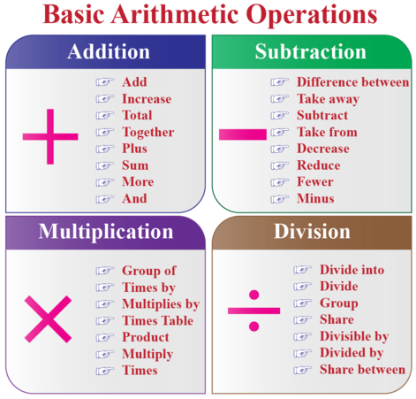

Educational Resources on Basic Arithmetic Operations

A beautiful chart displaying basic math operations.
/cinematic.mp3" type="audio/mp3"> Your Browser does not support this audio content.
A sound clip to aid in your educational process.
A video on basic arithmetics.